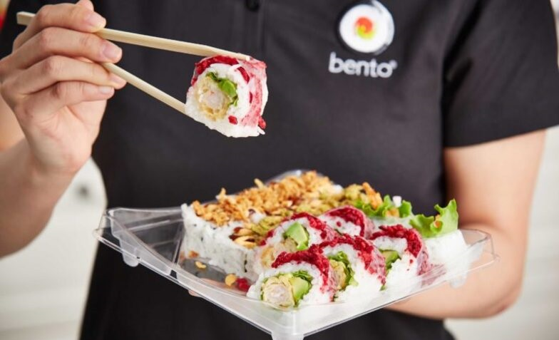

Bringing Fresh Sushi Delights to Walmart East Hill and Sobeys Forest Lawn with Bento
Sushi Partnership

In the world of culinary diversity, sushi has long held a special place as a beloved
delicacy. It's a cuisine that marries the artistry of food preparation with the
simplicity
of fresh, quality ingredients. As we embark on an exciting project, we are thrilled to
announce our partnership with Bento Sushi to bring this beloved cuisine to your local
Walmart East Hill and Sobeys Forest Lawn locations.
A Taste of Bento Sushi Excellence
Bento Sushi is North America's fastest-growing sushi company, known for its commitment to
quality, innovation, and an exceptional guest experience. With operations across the
United
States and Canada, Bento Sushi has established a reputation for crafting high-quality
sushi
that caters to a wide range of tastes and preferences.
What You Can Expect
At Walmart East Hill and Sobeys Forest Lawn, we are bringing the best of Bento Sushi
right
to your neighborhood. Here's a glimpse of what this exciting partnership will offer:
1. Fresh Sushi Creations: Bento Sushi is all about freshness. You can
expect a wide
variety
of sushi creations prepared using the finest ingredients, ensuring a delightful and
flavorful dining experience.
2. Diverse Menu Options: Whether you're a sushi connoisseur or new to
this Japanese
delight,
our menu caters to all tastes. From classic rolls to innovative and contemporary sushi
creations, there's something for everyone.
3. Exceptional Guest Service: Bento Sushi prides itself on delivering
top-notch customer
service. Our friendly and knowledgeable staff are committed to ensuring you have a
memorable
visit, whether you're dining in-store or grabbing a quick meal to go.
4. A Partnership That Cares: This partnership is not just about bringing
great food to
your
local stores. It's about creating a positive impact on the community. By supporting this
project, you're contributing to local job opportunities and helping us strengthen our
community bonds.
Your Culinary Adventure Awaits
With Bento Sushi and our team, your culinary adventure awaits. We are excited to
introduce
you to a world of sushi flavors, where tradition and innovation meet to create an
exceptional food experience. Whether you're a fan of classic sushi rolls or eager to
explore
new tastes, we invite you to join us in celebrating this partnership.
As we embark on this exciting project, we promise to deliver the freshest sushi,
excellent
service, and a memorable dining experience. Visit us at Calgary Walmart East Hill and
Sobeys
Forest Lawn to savor the delectable offerings from Bento Sushi, and experience a world
of
flavors right in your neighborhood.
Join us in celebrating this partnership and savoring the best of Bento Sushi in your
community. Stay tuned for the grand opening, and get ready to embark on a sushi
adventure
like no other!